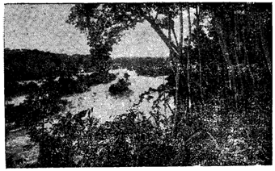

HUYỀN SỬ
Bãi-Hổ, tên chữ là Hổ-Châu, ở phía đông sông Tiền-Giang và sông Tân-Đông, là hai thôn cư Tịnh-Thới và Tân-Tịch. Nơi này, khi xưa hình thế như cọp vờn mồi, đúng là nơi long tranh hổ đấu. Cho nên, từ xa xưa Bãi-Hổ vẫn là chỗ chiến trường đẫm máu khốc-liệt. Chân-Lạp, Xiêm-La thường động binh đánh phá chốn này. Mà nhà Nguyễn Tây-Sơn cũng từng xua binh giao phong ác liệt nơi đây.
Trong khi Chúa Nguyễn-Phúc và nhà Nguyễn Tây-Sơn tranh hùng, trận đánh long trời lở đất tại Bãi-Hổ, xảy ra vào năm Kỷ-Dậu 1789.
Năm ấy, khoảng tháng 4, tướng lãnh chỉ huy quân đội Tây-Sơn là Thái-Bảo Phạm-Văn-Tham (cũng gọi là Phạm-Văn-Sâm) dàn thành trận thế tại Bãi-Hổ; Phạm-Văn-Tham vẫn là tướng giỏi của Tây-Sơn, đã có lúc đóng binh trấn giữ Sài-Gòn, bị Nguyễn-Vương dùng kế ly gián, khiến Phạm-Văn-Tham phải bị Tây-Sơn nghi ngờ, đến nổi phải đầu hàng. Nhưng Phạm-Văn-Tham chẳng thật lòng hàng phục, nên ít lâu lại trở mặt đánh trả lại Nguyễn-Vương.
Nghe tin Thái-Bảo Phạm-Văn-Tham dàn quân nơi Bãi-Hổ, Nguyễn-Vương cả giận, khiến Võ-Tánh, Nguyễn-Văn-Trương, Nguyễn-Văn-Nhơn dẫn binh đi đánh. Chiêng trống vang trời bụi binh mù mịt. Tiếng quân sĩ thét la vang vội một gốc trời như cọp gầm chấn động.
Với khí thế hào hùng sẵn có, hình Nguyễn-Vương phá tan quân đội của Phạm-Văn-Tham. Tuy nhiên đôi bên đều đã tổn thất nặng nề. Sau trận Bãi-Hổ, tương truyền: Những đêm thanh vắng, nhân dân quanh vùng thường nhận thấy có lắm hiện tượng quái ảo xảy ra.
Hồn ma bóng quế chập chờn trong sương mù. Tiếng vọng ồn ào như vó ngựa dập dồn, đoàn quân vượt tiến.
Não nùng thay. Một con sông Man-Thít đẫm máu, Châu-Văn-Tiếp qui thần; lại thêm Bãi-Hổ xương khô chất đống, Phạm-Văn-Tham tán đởm kinh hồn. Sa-Đéc ngày xưa lắm nổi đau thương vì chiến họa "Nhất tướng công thành vạn cốt khô". Từ xưa cuộc chinh chiến vẫn là điều đại bất hạnh cho một dân tộc lâm tai kiếp nói riêng, tủi nhục cho nhân loại hiếu sát hiếu chiến nói chung. Cho nên, qua cơn binh lửa, những nơi từng là bãi chiến trường ác liệt, hẳn là oán khí lâu tan oan, hồn vất vưởng gây nên lắm điều quái dị cũng là thường.
Nhân nhắc đến đoạn sử đau thương "Sống gầm Man-Thít", chúng tôi thêm nổi ngậm ngùi về chiến trường Bãi-Hổ, đánh dấu một thời quá khứ, dân tộc điêu linh vì nội chiến, đồng chủng tương tàn...
PHỐ-TIÊN BÃI-PHỤNG DIỆU HUYỀN
Sa-Đéc ngày xưa có hai nơi thắng cảnh: Phố-Tiên và Bãi-Phụng. Sách "Đại-Nam Nhất-Thống-Chí"(1) ghi:
(1) Bản dịch của Tu-Trai Nguyễn-Tạo: Nha Văn-Hóa Bộ Quốc-Gia Giáo-Dục xuất bản.
- Tiên-Phố ở đất Tân-Qui-Đông: Nước trong cát trắng, gió mát sông lặng. Người có ghe thuyền thường đem ra đậu nơi đây không bị ruồi muỗi huyên náo, nên gọi là Tiên.
- Bãi Phụng-Nga thì ở phía bắc sông Sa-Đéc, công dài 10 dặm. Phía đông là Bãi Phụng-Châu, phía tây là Bãi-Nga; có 5 thôn cư; Nghi-Phong Sùng-Văn, An-Tịch, Tân-Xuân và Tân-Lâm.
Một gò đất rộng, giữa có ngòi nhỏ, chia gò ra làm hai, vườn cây xanh tốt, cành liễu lòng thòng như đuôi chim phụng và có những bầy ngỗng lội tắm dưới bến nước, nên đặt tên là Bãi Phụng-Nga. Chỗ này là cảnh trí lâm tuyền mà lại gần thành thị, ai muốn nhàn tĩnh tâm hồn thì đến Tiên-Phố bơi thuyền ra Tiền-Giang mà tắm gội gió mát trăng thanh; ai ưa phồn hoa náo nhiệt thì qua Nam-Tân đến Sa-Đéc mà dạo chơi thành thị. Hơn nữa, có sông để câu cá, có ruộng để làm nông và trồng trọt hoa mầu, đủ cả lạc thú.
Cảnh trí Phố-Tiên, Bãi-Phụng, nửa thành-thị nửa lâm-tuyền, gợi lòng du tử sinh lòng cảm cựu, mến luyến phong quang ấy biết bao nhiêu. Tên đặt đã xinh xinh, cảnh trí lại hữu tình, thừa sức thu hút khách du nhàn tản quá bộ đến ngắm phong quang. Thảo nào khi xưa Chúa Nguyễn-Phúc-Ánh đã chọn Sa-Đéc làm chỗ hành cung cũng phải.
Lại tương truyền: Sở dĩ hai nơi thắng cảnh ấy có tên là Phố-Tiên (Tiên-Phố) và Bãi Phụng-Nga (Phụng-Nga Châu), vì chẳng những phong quang Tiên-Phố mường tượng như cảnh tiên, còn Bãi-Phụng hình thể như phụng múa, mà hai chốn ấy lại còn là nơi để các tay thơ thần rượu Thánh dạo chơi thích chí đề thơ ngâm vịnh. Và hơn nữa, những đêm trăng trong cảnh tịch, vẫn hay có chư Tiên hiện xuống, văng vẳng xa nghe như có tiếng hạc kêu ở nửa lừng trời, thấp thoáng như có đàn phụng múa chầu hầu các đấng tiên gia giáng thế.
Lạ thay! Vĩnh-Long có cảnh Tiên-Châu, Chùa Tiên-Châu(1). Sa-Đéc cũng có Phố-Tiên, Bãi-Phụng. Phải chăng vùng Vĩnh-Long - Sa-Đéc là nơi sông linh đất phước, nên thường có thần tiên qua lại vân du? Khí linh chung đúc nên kỳ quang thắng cảnh, sản xuất anh tài. Đất Long-Hồ-Dinh xưa đầy dẩy khí thiêng ẩn ước, xưa đã thế, mà nay và về sau hẳn sẽ còn có lắm điều đáng ngợi?
(1) Chúng tôi đã trình bày ở quyển "Vĩnh-Long Xưa và Nay".
OAI LINH HẦU-TƯỚC SỈ-HÒA
Trong cuộc thực thi chánh sách tàm-thực, khai thác lãnh thổ miền Nam, dưới quyền điều khiển của nhị vị tướng lãnh cao cấp là Nguyễn-Cư-Trinh và Trương-Phúc-Du, tự nhiên còn có biết bao anh hùng hào kiệt đã dày công đóng góp. Hoàn thành sứ mạng Nam tiến, Nguyễn-Cư-Trinh để tên trên lịch sử. Dân chúng Long-Hồ-Dinh nói chung, Đông-Khẩu-Đạo (tức vùng Sa-Đéc khi xưa) nói riêng, càng hoài cảm công nghiệp của ông bấy bao nhiêu, ắt cũng nên biết đến một vị vô tướng khác nữa là Sỉ-Hòa-Hầu. Khi xưa ở địa phận thôn Vĩnh-Phước, huyện Vĩnh-Nan, có thờ Tiền-Cai-Cơ Đông-Khẩu-Đạo đặc tiến Phụ-Quốc Sỉ-Hòa-Hầu (có sách chép là Nhân-Hòa-Hầu).
Hầu-Tước Sỉ-Hòa, tục gọi là Hòa-Hầu, vốn quê ở Tổng-Sơn, tỉnh Thanh-Hóa. Ông đã dày công phù-tá các Chúa Nguyễn đóng góp rất nhiều vào cuộc Nam tiến. Sau khi đã lãnh trọng trách trấn đóng ở nhiều nơi, ông phụng mạng thẳng vào Long-Hồ-Dinh góp sức với các quan liêu văn võ mở mang miền Tây. Bấy giờ ông đảm nhận sứ mạng lo việc an ninh cho dân chúng vùng Đông-Khẩu-Đạo. Với chức vụ Tiền Cai-Cơ, ông tận tâm đốc xuất thuộc hạ ngày đêm canh phòng bọn giặc, và thẳng tay bài trừ du đảng, khuyên dân bỏ hết các tệ đoan.
Triều đình ban chiếu khen ngợi công nghiệp của ông, phong ông là Phụ-Quốc Sỉ-Hòa-Hầu. Sau ông mất, dân lập đền thờ, mỗi khi cầu đạo đều có linh ứng. Tương truyền: Oai linh của ông từng khiến kẻ gian manh phải khiếp đảm. Những ai gian trá, ông hiển lộng oai thần, trừng trị cho đến biết sợ mà bỏ thói ác mới thôi. Hoặc khi đất nước bị giặc đánh phá, ông cũng từng hiển linh âm phù mặc trợ. Do đó, dân gian trải qua các đời vẫn truyền tụng công đức của ông, tin tưởng ở oai linh của ông vô cùng.
Năm Minh-Mạng thứ 12 (1831), nhà vua ban sắc gia phong cho ông là "Quảng-Ân Thực-Đức Trung-Đẳng-Thần", chuẩn cho thôn Vĩnh-Phước phụng tự.
SÓNG GẦM MAN-THÍT
Ngược dòng lịch sử, chạnh nhớ đến nước non trong thời kỳ Chúa Nguyễn-Phúc-Ánh và Tây-Sơn tranh hùng, gây cảnh núi xương sông máu, biết bao anh hùng liệt sĩ đã bỏ mình. Nhất là trên các chiến trường đã xảy ra nơi Sa-Đéc, duy trận ác chiến trên sông Man-Thít, muôn thuở nhắc đến như còn hình dung được mặt sông loang máu đỏ, sóng gầm gió thét vì oán khí của tử sĩ ngút trời.
Trận Man-Thít xảy ra trong khoảng tháng 10 âm lịch năm Giáp-Thìn 1784. Năm ấy, Nguyễn-Vương từ Xiêm trở về nước, có hai viên đại tướng Xiêm là Chiêu-Tăng và Chiêu-Sương đem 20 vạn quân và 300 chiến thuyền theo giúp. Châu-Văn-Tiếp, một tướng lãnh nổi danh trong tam hùng Gia-Định, được phong làm Bình-Tây Đại-Đô-Đốc, hiệp với các tướng Võ-Di-Nguy, Dương-Công-Trừng, Nguyễn-Huỳnh-Đức, Lê-Văn-Quân đánh lấy lại Rạch-Giá, Sóc-Trăng, Trà-Ôn.
Đến Trần-Giang (Cần-Thơ), Đại-Đô-Đốc Châu-Văn-Tiếp dẫn thủy quân kéo thẳng qua Vĩnh-Long, kịch chiến với Tây-Sơn tại Man-Thít, đoạt được 18 chiến thuyền. Ông bèn qua thuyền địch xem xét. Một tướng Tây-Sơn là Chưởng-Tiền-Bảo núp dưới lườn thuyền, thừa lúc ông bất ý, chun lên thích một mũi gươm vào ngực ông. Ông thét to, rút gươm chém chết Chưởng-Tiền-Bảo, rồi ngã gục ngất đi trên vũng máu.
Nguyễn-Vương truyền vực ông qua thuyền ngự cứu cấp. Ông tỉnh lại, thổn thức: "Trời chưa muốn diệt binh Tây-Sơn sao, nên nỡ giết ta?". Rồi tắt thở trong ngày 13 tháng 10 âm lịch năm Giáp-Thìn 1784 (1).
(1) Xin xem tiểu sử Châu-Văn-Tiếp ở quyển "Vĩnh-Long Xưa và Nay" đã xuất bản.
Châu-Văn-Tiếp mất rồi, tương truyền từ ấy trên sông Man-Thít vẫn thường nghe gió thét sóng gầm, dường như có đại đội hùng binh đang xung sát với nhau. Những đêm vắng lặng âm khí nặng nề, âm thanh rờn rợn ma quái thỉnh thoảng vang lên, ngân xa trong khoảng không.
Giữa lúc nước nhà lâm vào cảnh nội chiến, Nguyễn-Vương và Tây-Sơn tranh giành ảnh hưởng nhau làm cốt nhục tương tàn, biết bao máu anh hùng hào kiệt phải đổ, trước sự phân tranh giữa người cùng giống nòi.
Nhắc đến đoạn này, chúng tôi chẳng khỏi bàng hoàng về trận ác chiến nơi Man-Thít ấy và dư âm huyền ảo hãy còn truyền tụng đến nay. Dòng sông Man-Thít gió thét sóng gầm từng lúc, phải chăng đó là oán khí của chiến sĩ hữu danh và vô danh đã bỏ mình trên đường xung sát, cũng vì ngôi thứ, vì quyền lợi mà sát hại lẫn nhau, trên dãy non sông hoa gấm!
Mỗi khi ghe thương hồ qua lại trên sông Man-Thít, không sao quên được một ấn tượng hãi hùng của cuộc đồng giống nòi tương tranh trải qua trên thế kỷ.
THANH GƯƠM QUI Y
Xưa nay vật báu thường chờ tay quý nhân có duyên được gặp được trần-tàng. Gươm linh cũng chờ tay anh tuấn sử dụng thì mới nên giá quý, mới hiển mặt kỳ nhân.
Tương truyền: Chúa Nguyễn-Phúc-Ánh khi mông trần bôn tẩu trên khắp nẻo đường đất nước tại miền Nam, trên tay Ngài có một ngọn gươm linh kỳ bí. Gươm ấy, mỗi khi sắp có việc biến động gì, đang đêm bỗng phát tiếng vi vút như reo lên báo trước. Và như thế, trăm lần như một, sau đó ắt Ngài phải lên yên ngựa xông pha trận mạc, cho gươm linh dấy máu oan cừu. Cũng với thanh gươm ấy, Ngài ra trận chỉ huy tướng sĩ, đều được vuông tròn, không có điều chi bất trắc đến nỗi phải sơ thất. Dầu khi nguy hiểm, thập tử nhất sanh, nhờ gươm linh hộ mạng, Ngài đều thoát hiểm, không hề phải bị dấy máu long bào bao giờ.
Tuy nhiên, đôi khi tâm tư khắc khoải về viễn đồ thống nhất non sông, ngồi lặng nhìn ngọn gươm linh để trên án sách bên cạnh mình, Nguyễn-Vương vẫn có đôi chút thở dài than thầm: "Từ lúc ta cất bước lưu vọng đến nay, gươm báu tiên vương lưu truyền đã giúp ta khá nhiều, máu loang gươm thép, lòng ta cũng phiền muộn lắm. Gươm linh ôi! Biết bao giờ ý đồ của ta được thành tựu, để mi khỏi dấy máu tanh? Ta nguyện cùng trời đất hễ ngày nào ta thấy nhẹ lòng rồi, ta nhất quyết đem mi dâng vào cửa Phật".
Quý-Mão 1783 tháng 7, Ngài ngự ra cửa biển Ma-Ly để dọ thám tình thế địch. Gặp thuyền địch hơn 20 chiếc kéo đến vây đánh, định bắt sống Ngài. Liệu khó chống nổi, Ngài và đoàn tùy tùng trương buồm cho thuyền chạy về phía đông, lênh đênh ngoài biển bảy ngày đêm. Trong thuyền hết nước, quân lính đều khát. Ngài lấy làm lo, ngửa mặt lên Trời, khấn rằng: "Như tôi có mạng làm Vua, xin cho thuyền ghé vào trong bờ để cứu tánh mạng mấy người trong thuyền! Nếu không thì thuyền chìm xuống biển, tôi cũng cam tâm". Khấn xong giây phút, thấy gió lặng sông êm. Lại thấy nước biển bỗng chia đôi dòng: dòng đục, dòng trong. Một người trong thuyền múc uống thử, reo to:
- Nước ngọt, nước ngọt!
Ngài mừng rỡ, truyền múc bốn năm chum. Múc vừa xong, nước tự nhiên trở mặn lại y như trước. Nhờ đó, Ngài trở về được đến Phú-Quốc bình an vô sự. Quốc-mẫu mừng chảy nước mắt, bảo Ngài:
- Con lưu lạc đã nhiều, gian nan không xiết kể, nhưng xem lòng trời vẫn hằng thương tưởng đến con, coi đó đủ biết ý trời. Con đừng thấy gian hiểm mà ngã lòng.
Ngài lại tạ rằng:
- Xin dâng lời mẹ dạy.
Rồi đó thuyền ngự đến cửa biển Đốc-Công. Thanh gươm báu linh ứng từ đêm trước đã phát điềm báo trước sẽ có dấy máu. Ngài cẩn thận đề phòng. Quả nhiên, lại có thuyền Tây-Sơn ngăn đón. Tướng địch là Đô-Đốc Nguyệt huy động quân sĩ chận đánh. Đã sẵn đề phòng, Nguyễn-Vương xua quân nghinh chiến, không chút nao núng.
Đứng trước thuyền ngự, tay cầm gươm linh điều khiển tướng sĩ, Nguyễn-Vương đầy lòng tin quyết thắng, một phần cậy ở sự hộ trì thiêng liêng của thanh gươm báu, một phần vững lòng về tài năng của các tướng. Trống chiêng vang rền giục thúc. Trận thế dần dần nghiêng phần thắng lợi về phía Nguyễn-Vương. Đô-Đốc Tây-Sơn núng lòng quày thuyền chạy. Tức khắc Nguyễn-Vương phát cờ lịnh, giục đoàn thuyền đuổi theo. Bên thuyền địch xao xuyến, rối loạn hàng ngũ.
Binh Nguyễn-Vương đắc thắng, bắt sống được Đô-Đốc Nguyệt. Thương tài, Nguyễn-Vương dụ hàng, nhưng Đô-Đốc Nguyệt khảng khái không chịu khuất. Nguyễn-Vương truyền đem gươm linh ra nói:
- Nếu ngươi không hàng, ta khó thế dung tình.
Đô-Đốc Nguyệt thản nhiên:
- Đấng anh hùng xem thác như về. Ta đã thờ nhà Tây-Sơn, chỉ đành chết vì chúa tướng của ta mà thôi.
Nguyễn-Vương cực chẳng đã phải truyền đem chém, rồi ngậm ngùi: gươm linh đã dấy máu biết bao nhiêu rồi! Lòng ta bao nở. Cầu xin trời đất hộ trì, giúp ta mau chóng thành công, để đỡ đau lòng nhìn cảnh núi xương sông máu.
Sau đó, Ngài nhớ lời nguyền ngày trước, bèn đem gươm linh vào chùa, quỳ trước đại hùng bửu điện khấn vái. Từ ấy, thanh gươm mang tên là thanh gươm quy y, vì Ngài đã đem dâng gươm nơi cửa Phật.
Cho đến khi Ngài về đóng đại bản dinh ở Nước-Xoáy, thanh gươm quy y xa gần đều biết, truyền tụng thêm lên, làm tăng uy tín của Ngài. Bởi dân chúng cho rằng Ngài nhân hậu, thanh gươm kia còn đem vào cửa Phật quy y, thì đức độ hiếu sinh của Ngài hẳn cũng đáng kính phần nào. Nhờ thế, Ngài thâu phục được lòng dân, nên thẳng đường tiến đến mức thành công vinh diệu.
GỐC SAO THIÊNG
NƠI CÂY-DA BẾN-NGỰ
Nơi chương trình bày về di-tích, chúng tôi đã nói về Cây-Da Bến-Ngự. Nay thuật lại một đoạn huyền sử về sự thiêng liêng nơi gốc cây da này, chúng tôi xin nói rõ hơn.


Cây-Da Bến-Ngự ngày xưa tọa lạc tại xã Long-Hưng.
Vua Gia-Long thường ra đây ngồi câu cá. Nay cây da đã bị đốn mất.
Chỗ cây da vốn gần bến nước. Nguyên xưa kia tại cội da ấy, còn có để một góc sao to lớn, châu vi đến hai người ôm mới giáp. Khi đức Cao-Hoàng đình trú tại Long-Hưng, thường thường mỗi buổi chiều mát, Ngài hay đến ngồi trên gốc cây sao ấy, dựa bên cội da mà câu cá giải khuây, nên tục gọi chỗ ấy là Cây-Da Bến-Ngự.
Đến khi thống nhất non sông, Ngài lui về Huế lên ngôi Vua. Chốn cũ Bến-Ngự xưa trong Nam này vẫn lưu dấu tích. Cội da ngồi ngày một tốt tươi, gốc sao thì lần lần xiêng lệch xuống sông, rồi ngấm tuốt dưới lòng sông, ngay gốc chân cây da.
Mấy mươi năm gần đây, gốc sao vẫn ở dưới nước càng thêm tươi tốt. Ngày kia, một người chài lưới bàn tính với vợ con:
- Gốc sao tốt quá, hai mẹ con bây kềm thuyền, để ta lặn xuống mò, tìm cách vớt lên, đem bán cho đám thợ thuyền, dùng làm cong đà ghe thì vững chắc vô cùng, kiếm được khá tiền. Người vợ xua tay, khuyên dứt chồng:
- Ấy chết, đừng tính bậy không nên. Tôi nghe đó là dấu tích của Hoàng Đế lưu lại, ai cũng có lòng mong muốn gìn giữ để làm chút kỷ niệm xưa. Mình làm ngang, đố khỏi mang họa.
Người chồng cười lạt:
- Sợ cóc gì. Của quý bỏ hoài cũng uổng. Mình nghèo, nhờ đó mà kiếm chác được chút đỉnh, tội gì làm ngơ. Có phải của riêng ai đâu mà ngại. Liền hăm hở nhảy tòm xuống nước, lặn mò gốc sao. Vừa mò đụng, tay chưa kịp tra dây để cột chặt kéo lên, người chài lưới bỗng la bài hãi:
- Úy trời! Đau chết đi thôi! Tôi biết tội lỗi rồi. Xin thiên địa quỷ thần tha cho. Tự hậu tôi không dám phạm tới nữa. Hai mẹ con ngồi trên thuyền, thấy điều quái dị, há hốc mồm kinh ngạc, nhìn sững cảnh tượng người chồng đang vật mình vật mẩy, miệng lảm nhảm vái van, mặt mày nhăn nhó, nước mắt ròng ròng. Dân chúng quanh vùng nghe la bài hãi đã đổ xô ra xem. Có người thấy thế buột miệng nói to:
- Chết rồi! Thằng Tám đó phải không? Sao mầy nhè chỗ linh thiêng mà dám xâm phạm chớ? Bị thần linh quở phạt đó. Bà con mau cứu nó lên giùm.
Người thợ chài lưới tên Tám không ngớt lảm nhảm van xin, khẩn cầu các đấng khuất mặt tha thứ. Chòm xóm ái ngại, đôi ba người nhảy đại xuống, đến gần anh Tám mà lôi đi khỏi chỗ ấy.
Đem nhau lên bờ, xem lại bàn tay của anh Tám như ai vặn bẻ tréo xưng vù. Anh Tám kêu la rên rỉ, chập lâu mới hết kinh hoàng. Mọi người xúm lại hỏi han tự sự. Anh Tám thú thật mình đã động lòng tham toan vớt lấy gốc sao, nhưng lạ thay, tay vừa đụng gốc thì bị vặn tréo đau đớn quá.
Một người trong đám cười khì:
- Hay là vọp bẻ? Hoặc là anh đụng phải vật gì đó chăng?
Một người khác nạt:
- Đừng giễu cợt phạm thượng. Chắc chắn thần linh quở đấy. Ghê thật!
Anh Tám khẽ gật đầu, tán thành mấy lời của người vừa nói mà rằng:
- Đúng. Chính tôi có cảm giác rờn rợn như thế. Như đấng khuất mặt ra tay hành phạt tôi vậy. Từ nay biết sợ, tôi xin chừa.
Trong đám người nghe, không phải ai cũng đều tin mấy lời của anh Tám. Sau đó, lắm kẻ háo kỳ lén ra tay vớt thử gốc sao xem thế nào. Té ra ai cũng bị chung cảnh tượng như anh Tám. Hơn nữa, ai biết tỏ vẻ hối hận, được an toàn ngay.
Bằng như ai ngoan cố, thuốc thang gì cũng chẳng khỏi, đến rốt biết sợ, khẩn cầu tại gốc da ấy mới lành mạnh được.
Tiếng đồn Cây-Da Bến-Ngự linh thiêng. Do đó, gốc sao bên Cây-Da Bến-Ngự được tồn tại, làm chứng tích của một bậc vua chúa trong khoảng thời gian thất thế, lưu lạc nơi Long-Hưng, Sa-Đéc xa xưa.
CHUYỆN QUAN LỚN SEN
Du khách đến Sa-Đéc, viếng đình Quan Thượng-Đẳng Tống-Phước-Hòa và lăng quan lớn Sen tức cụ Kinh-Môn Quận-Công Nguyễn-Văn-Nhơn, ắt sinh lòng cảm cựu mà băn khoăn tự hỏi: gọi là Quan Thượng-Đẳng dĩ nhiên rất dễ hiểu: còn như Quan Lớn Sen thì có ý nghĩa chi?
Tương truyền: Cụ Nguyễn-Văn-Nhơn khi mới tiến thân nhờ lòng trung hậu và tính khảng khái mà được Chúa Nguyễn-Phúc-Ánh rất tin yêu. Những khi Nguyễn-Vương xuất chinh, hay thất cơ phải bôn đào, có cụ Nguyễn-Văn-Nhơn theo hộ giá. Đặc biệt cụ Nhơn vẫn hằng được giao cho trọng trách bảo vệ quốc mẫu. Cụ vẫn tận tâm tận tình phục vụ, cung kính đối với quốc mẫu như mẹ ruột.
Quốc mẫu tuổi già bịnh hoạn, sức khỏe suy yếu. Cụ hôm sớm chầu hầu bên cạnh, hết lòng lo lắng từ miếng ăn thức uống. Biết rằng quốc mẫu ưa dùng chè sen, cụ vẫn tìm những hạt sen tốt dâng lên. Mỗi khi quốc mẫu tỏ ý muốn dùng chè sen, chỉ cần báo lên một tiếng "Sen", tức khắc cụ cho kẻ tả hữu đem dâng ngay. Lâu ngày thành danh, trong chốn cung vi, cũng như ngoài đời, người người đều biết tấm lòng thành của cụ đối với quốc mẫu, đối với đấng quân vương, nên cũng truyền nhau gán cho cụ một cái tên riêng là "Sen". Do đó khi cụ đã nghiễm nhiên là một bậc đại thần, người đời vừa muốn tránh gọi tên húy của cụ, vừa gợi nhớ chuyện xưa, hằng gọi cụ là quan lớn "Sen".
Điều ấy, chỉ là kiêng húy và tỏ lòng mến cụ nhân hậu trung thành. Chắc rằng chẳng có dụng ý mỉa mai gì. Thiết nghĩ, cứ xem kỹ tiểu sử của cụ (chúng tôi đã trình bày ở phần Danh nhân: Kinh-Môn Quận-Công Nguyễn-Văn-Nhơn), hẳn mọi người đã nhận thấy cụ rất chất phát, trưởng hậu. Thuở trẻ vì nạn đao binh mà thất học, kịp khi tuổi đã bốn mươi mà vẫn cố gắng học hỏi, thật đáng khâm phục, mến tưởng.
Hoa Sen biểu hiểu sự nhân từ, trinh trắng. Gọi cụ là Quan Lớn Sen, kể cũng thật ý vị.
CON GÁI ÔNG BỎ HẬU
GIẢ ĐIÊN TỪ CHỐI CUỘC ĐỜI VƯƠNG GIẢ
Đây là một câu chuyện rất lý thú giữa một cô gái tại Long-Hưng và Nguyễn-Phúc-Ánh trên đường lưu vong. Đến nay các bô lão ở hai tỉnh Vĩnh-Long và Sa-Đéc thường nhắc đến.
Trời đã về khuya, cô gái con ông trùm cả Nguyễn-Văn-Mậu tự Hậu, vẫn ngồi chống tay trên bàn, áp má vào lòng bàn tay, mắt đăm đăm ngó sửng hoa đèn, bàng hoàng tư lự. Từ hồi chiều, thân phụ cô đã gọi cô mà bảo:
- Cha xem Nguyễn-Vương sau này ắt sẽ thống nhất được non nước, lên ngôi cửu ngủ, trị vì thiên hạ. Từ lâu cha đã thi ân cho Ngài, nên Ngài tỏ lòng kính trọng cha(1), khiến cha cảm thương Ngài là người hiếu nghĩa, đang khốn bước phong trần. Hiện nay quốc mẫu và chính phi vẫn còn mông trần nơi Phú-Quốc. Bên mình Ngài vắng vẽ không người hầu hạ, cha rất xót thương. Ý cha muốn gã con cho Ngài, hôm sớm an ủi trưởng chí cho Ngài, mai sau ắt con nhờ phận được cao sang, vinh hiển. Còn nghĩ thế nào?
(1) Chúng tôi đã thuật trong bài "Chuyện ông Bỏ Hậu".
Cô gái thở dài, lắc đầu không nhận:
- Chẳng nên đâu cha!
- Sao vậy? Ngài thường tỏ dạ rất tin yêu cha. Vả lại, Ngài cũng thường tỏ ra có cảm tình với con. Một khi cha đánh tiếng đưa con chầu hầu Ngài, nhân duyên ắt thành tựu tốt đẹp, có trở ngại chi đâu?
- Đành rằng Ngài không chê phận con thấp hèn, nhưng tính đến chuyện sánh đôi với Ngài coi sao cho phải? Bấy lâu con vẫn có lòng thương mến Ngài như tình anh em mà thôi.
Thấy thân phụ có vẻ không vui, cô nói thêm:
- Vả chăng, ai cũng biết cha con ta đã hết lòng nâng đỡ Ngài trong cơn khốn đốn. Đó là một nghĩa cử cao đẹp, nên giữ cho trọn vẹn cao cả. Nếu nay gây thêm cuộc nhân duyên, chi cho khỏi thiên hạ xầm xì cha con ta cố tình mua chuộc cảm tình của Ngài, hồng nhờ nhõi về sau. Như thế, tổn thương đến nghĩa cử của cha đã từng thi thố. Xin cha chớ giận còn, xét lại thật chẳng nên đâu.
Thân phụ cô không nói gì nữa, nhưng có ý phiền muộn. Cô lui vào phòng, nằm trăn trở lo ra, đêm khuya vẫn không dỗ giấc được, nên ngồi dậy khêu ngọn đèn, trầm mặc sầu tư, tấc lòng buồn bã vô cùng.
Từ ấy cô có ý tránh mặt Nguyễn-Vương. Thân phụ cô lại rầy bảo:
- Con không thuận thì thôi, cần gì phải tránh mặt. Không khéo Nguyễn-Vương hiểu lầm, cha con ta còn ra gì nữa.
Cô khóc nói:
- Xin cha yên lòng. Con nguyện sẽ giữ sao cho Nguyễn-Vương sẽ cảm phục cha con ta mãi mãi.
Một hôm, Nguyễn-Vương thình lình gặp cô, khẽ nghiêng mình thi lễ với cô và nói:
- Sao lâu nay hiền muội ra chìu ủ dột, chẳng buồn góp chuyện cùng ta như trước? Có điều chi phiền giận ta chăng?
Rồi không đợi cô đáp, Nguyễn-Vương lại nói:
- Ta mang ơn thân phụ hiền muội rất nhiều, suốt đời chẳng dám quên. Hiền muội có biết lòng ta chăng? Ta vẫn hằng mong được nghe câu nói tiếng cười của hiền muội. Ta cảm thấy sầu muộn lạ!
Cô nghe nói, giật mình nghĩ thầm: Người này đã yêu ta chăng? Biết có thật lòng hay không? Hay đang lúc cô đơn, hiu quạnh, người ghẹo nguyệt trêu hoa giải muộn đó thôi! Dầu sao ta quyết không thể đáp lại tình yêu ấy được, phải giữ vẹn nghĩa cử của cha ta đã đối với Ngài. Ấy mới là để tiếng tốt muôn thuở được.
Rồi nghĩ rằng tại mình, nên khiến Nguyễn-Vương mới có lúc đắm say chớt nhả, hư thể thống quân thần. Cô bèn giả điên thường lấy bùn, lấy lọ bôi đen mặt. Lại làm những điều quái dị, tóc tai dã dượi trông hình dáng vô cùng thiểu não. Nguyễn-Vương ngẩn ngơ, thầm thương tiếc cho một đóa hoa đồng nội chẳng may lợt sắc, phai hương. Thân phụ cô chẳng hiểu thâm ý của cô, tưởng cô đã ưu tư đến nổi mất trí, lòng cũng đau xót thầm cho con gái mình bạc phước.
Trước cô còn giả điên, chẳng dè sau đó cô hóa ra điên thật. Hẳn là tâm trí cô rối loạn, nhiều ý nghĩ ngang trái, tâm sự mang mang nên phải quẩn trí mà thành tâm bệnh, phát cuồng. Những lúc tỉnh say, say tỉnh, lòng cô hẳn vô cùng khổ sở. Chẳng bao lâu cô bịnh nằm vùi, nhắm mắt lìa trần trong lúc xuân xanh đang độ.
Nguyễn-Vương càng lấy làm thương tiếc, than thầm. Và sau khi đã lên ngôi Hoàng-Đế, chẳng những Ngài phong thưởng ông Bỏ Nguyễn-Văn-Hậu rất trọng, mà cũng truyền cho quan địa phương xây cất ngôi mộ của người con gái ấy lưu niệm muôn đời.
NGUYỄN-VƯƠNG ĐẾN
VÙNG NƯỚC-XOÁY LONG-HƯNG
Năm Đinh-Vị 1787, tháng 10 âm lịch, dân chúng quanh vùng Nước-Xoáy xôn xao vì một tin loan truyền quan trọng:
- Thánh giá sẽ ngự đến vùng này trong nay mai.
Các vị bô lão tỏ vẽ lo ra:
- Nếu thế, nơi này ắt sẽ chẳng khói vướng họa binh đao. Nguyễn-Vương từ bên nước Xiêm kéo binh về đây, một khi thám tử Tây-Sơn dọ tin đích xác, sớm tối chúng sẽ xua quân tới tấn công chớ chẳng không. Chừng ấy, chốn này hóa ra bãi chiến trường. Phải liệu làm sao?
Nhiều người đưa ý kiến:
- Không ngại. Đấng trượng phu thấy phải thì làm, thì vừa giúp, họ có sợ gì nguy hiểm. Đợi khi ngự giá đến đây, chúng ta xét thấy đáng là một vị chơn chúa, thì cùng nhau gắng sức khuông phò. Bằng như xét chẳng ra gì, chúng ta sẽ liệu cách đối phó chẳng muộn. Hãy cứ bình tĩnh chờ xem tình thế biến chuyển ra sao.
Ai nấy đều khen phải. Chẳng mấy ngày, binh sĩ của Nguyễn-Vương rần rộ đến vùng Nước-Xoáy, an dinh hạ trại, xây đồn đắp lũy. Khéo thu phục nhân tâm, Nguyễn-Vương chiêu dụ dân chúng trong vùng, khiến ai nấy đều cảm khích, trợ lực. Các vị bô lão và các thân hào nhân sĩ địa phương dần dần cũng có cảm tình, hết lòng ủng hộ Ngài.
Vì sao chỗ ấy gọi là vùng Nước-Xoáy? Nguyên tại đó có Tiền-Giang và Hậu-Giang giáp nối, cùng các sông rạch khác chảy dồn vào đấy, nước chảy xoáy vòng lại, nên mới gọi là vùng Nước-Xoáy, tên chữ đặt là Hồi-Oa-thủy.
Nguyễn-Vương truyền xây đắp thành đất tại đấy. Hai bên tả hữu đều có lập đồn phòng thủ. Phía tả giao cho hai vị tướng lãnh Huỳnh-Văn-Khánh và Tống-Phước-Ngoạn coi giữ. Phía hữu do Nguyễn-Văn-Trương và Tô-Văn-Noài canh chừng, ngăn ngừa quân địch xâm nhập.
Binh Tây-Sơn vẫn thường đánh phá, nhưng các tướng của Nguyễn-Vương đủ sức đẩy lui được. Tuy nhiên, nhiều trận giao phong dữ dội, đôi bên đều tổn thất nặng nề. Để yểm trợ binh sĩ trong trường xung sát, Nguyễn-Vương khiến làm thêm súng đại-bác bằng gỗ, lấy hột cao khô làm đạn bắn nà. Đồng thời, các tướng Tôn-Thất-Huy, Lê-Văn-Thược, Tôn-That-Hội và Nguyễn-Duy-Nhuận chia nhau tấn công từ phía. Do đó binh Tây-Sơn núng thế phải rút đi.
Dân chúng lần lần theo về với Nguyễn-Vương hầu hết. Nguyễn-Vương thu dụng cả, chia ra làm hai đoàn: một nửa làm hương binh, một nửa sung vào lực lượng chánh qui, tác chiến. Nhưng đến tháng 8 năm Mậu-Thân 1788, Nguyễn-Vương nghĩ lại thương đám hương binh khó nhọc, nên đều cho về quê quán nghỉ ngơi. Cảm tấm lòng nhân hậu ấy, dân chúng vùng Hồi-Oa càng dốc lòng phù tá Nguyễn-Vương hơn nữa. Ấy là một thắng lợi đưa đến sự thành công sau này, do sự Nguyễn-Vương đã khéo léo chinh phục nhân tâm, giữ vững được vùng trọng yếu làm căn bản tạo nên nghiệp đế.
Đốc Phủ-Sứ Nguyễn-Đăng-Khoa khi ngồi quận trưởng Lai-Vung, cảm hoài lúc Nguyễn-Vương náu mình nơi Hồi-Oa có bài thơ vịnh:
Tiên hoàng phong ngợi cảnh Hồi-Oa,
Vận nước xây nên cánh hiệp hòa.
Nguồn suối lăm quày quày hổn độn,
Dòng sông mừng nổi nổi ngâm-nga.
Cám vì cánh ác xơ lông lá,
Thương nổi phùng vi rối ruột rà.
Vận phái triều tôn trời đất định,
Khách trần ai dể tính cho qua.
Đáp lại lòng thương mến của dân chúng Hồi-Oa, nhất là cảm thấy đây là chỗ hưng vượng để phát thành nghiệp cả, Nguyễn-Vương nhóm họp các bô lão trong vùng mà tuyên bố:
- Từ ta đến đây, phong quang càng ngày càng rạng vẽ, dân chúng thuần phác nhiệt thành ủng hộ ta, thật đáng cảm khích. Quả đây là đất hưng vượng, giúp ta gầy nên cơ nghiệp. Vậy để lưu niệm, ta đổi tên Hồi-Oa là Long-Hưng. Chư vị nghĩ thế nào?
Các bô lão đều rập nhau tán thành:
- Chúa thượng đã tưởng đến, vinh hạnh cho vùng đất xứ sở chúng tôi. Tên đất do Chúa thượng ban cho, chúng tôi xin ghi lấy, để tưởng nhớ mãi mãi.
Nguyễn-Vương hân hoan, truyền bày tiệc thết đãi các bô lão và cho mở hội để dân chúng liên hoan trong dịp đổi tên làng mới.
Ân oai của Nguyễn-Vương ngày một đượm nhuần nơi Sa-Đéc. Để kỷ niệm, Nguyễn-Vương lại đặt tên cho những làng xá quanh đấy đều mang một chữ "Long" ở trước, như Long-Ẩn, Long-Thắng, Long-Hậu.